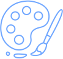

Кравченко Екатерина Геннадьевна

С детских лет занималась рисованием, сначала
в студиях, затем в художественной школе.
Продолжила образование в средних и высших заведениях,
участвуя в различных конкурсах.
Харьковское художественное училище (ХХУ)
Младший специалист
2009-2012 гг.
Киевский национальный университет культуры и искусств (КНУКиМ)
Бакалавр
2012-2017 гг.
Киевский национальный университет культуры и искусств (КНУКиМ)
Специалист
2017-2018 гг.
IV Фестиваль детского творчества "Харьков -город добрых надежд" 2006 г.,
Лауреат X-го юбилейного Международного фестиваля детского творчества "Мир без темных красок" 2006 г.,
Дипломант обласного конкурса детского рисунка "Хлеб в моём представлении" 2006 г.,
Лауреат III-степени обласного конкурса академического рисунка 2008 г.,
Диплом Первое место фестиваля "Живая вода" 2008 г.,
Диплом Х-го фестиваля "Весны, радости и света" 2008 г.,
Диплом Всеукраинского конкурса, посвященный Шевченковчким дням 2008 г.,
Премия "Мистецька гордiсть" 2009 г.,
Участие в выставке "Вiкно у дивосвiт" 2011 г.,
Участые в выставках в Доме Художника с 2008-2012 г.,
Участие в выставке PinchukArtCentre 2011 г.,
Участие в выстаке плакатов "Карпатский простiр" 2016 г.,
Победительница PANGRAM-2017 III- место в номинации: Буквица, 2017 г.
Публикация в учебном пособии "Типографика с изюминкой"
Удрис Н.С., Чуева О. В.. Киев 2014 г.,
Публикация в буклете "Народженi Карпатами. Плакатный проект" Киев-Ивано-Франковск 2016 г.